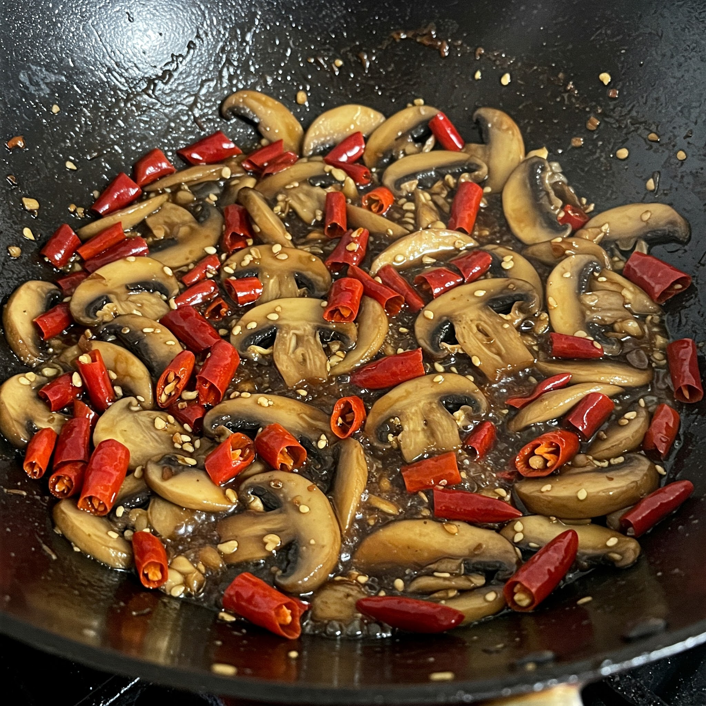

Chilli Mushroom Stir-Fry
Ingredients
- 200g mushrooms (sliced)
- 1 onion (sliced)
- 1 capsicum (sliced)
- 2–3 green chillies (slit or chopped)
- 1 tbsp oil
- 1 tbsp soy sauce
- 1 tsp chilli sauce
- 1 tsp tomato ketchup
- 1/2 tsp vinegar (optional)
- Salt and pepper to taste
- Spring onion greens for garnish (optional)
Steps
- Heat oil in a pan or wok. Add onions, green chillies, and capsicum. Stir-fry for 2–3 minutes.
- Add mushrooms and cook on high heat until they release water and start browning.
- Stir in soy sauce, chilli sauce, ketchup, and vinegar. Mix well.
- Season with salt and pepper as needed.
- Cook for another 2–3 minutes until everything is well-coated and sizzling.
- Garnish with spring onion greens and serve hot as a snack or side!